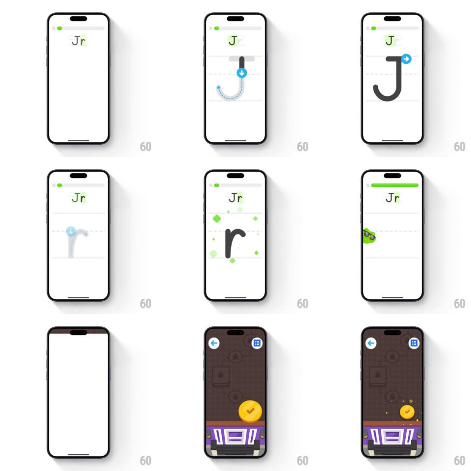

Media
Frame-by-frame

Rebuild this interaction 1:1: Duolingo ABC's letter tracing - a big outline letter ("J") appears on ruled lines with a blue arrow puck showing where to start; following the stroke draws it in thick black, green sparkles celebrate completion, and the scene transitions to a dark map where a reward ball hops along a path onto a podium.

Rebuild this interaction 1:1: Duolingo ABC's letter tracing - a big outline letter ("J") appears on ruled lines with a blue arrow puck showing where to start; following the stroke draws it in thick black, green sparkles celebrate completion, and the scene transitions to a dark map where a reward ball hops along a path onto a podium.
## Integration
Integration: stack-agnostic spec - springs given as stiffness/damping, timed motions as duration + curve; map every value to your framework and animation library of choice.
## Scene
White tracing canvas: faint gray "Jr" target text at top, ruled handwriting lines, the letter outline with numbered stroke start points and a blue circular puck with an arrow. Map scene: dark brown map with path nodes, a blue-yellow ball, a purple podium, back and grid buttons.
## Motion spec
Pattern: guided stroke tracing into map reward.
- Entry: the letter outline draws itself in faintly (600ms) and the puck pulses at the stroke start (scale 1 -> 1.15, 1s loop).
- Tracing: the stroke fills thick black following the finger within a generous tolerance (~24px); the puck leads 20px ahead, tilting along the stroke direction; lifting mid-stroke pauses, resuming continues - no punishment.
- Stroke complete: green sparkles pop along the stroke (8-10 pops, scale 0 -> 1 -> 0, 400ms, staggered 60ms) and the target text turns green with a small bounce.
- Multi-stroke letters: the next stroke's puck appears only after the previous stroke's sparkle settles.
- Transition: the canvas wipes to the map (400ms); the reward ball hops along the path (arc hops, spring ~280/18 per hop, squash on landing) and mounts the podium, a final star burst firing on arrival.
## Calibration
- Stroke direction matters: the puck shows the intended path; wrong-direction drags still fill but the puck nudges back.
- Sparkles are green - Duo's brand applause.
## Reduced motion
Letter fills statically on trace; map fades in; ball appears on the podium.
## Don't miss
- The puck leads, the ink follows - the child chases it; never let ink appear ahead of the finger.
- The map hop sequence is the real reward - budget it a full 2 seconds.